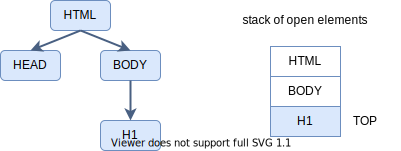

| https://html.spec.whatwg.org/multipage/parsing.html | HTML5 パーサー規格 |
| https://triple-underscore.github.io/HTML-parsing-ja.html | 日本語訳 |
規格で、パーサーの入力は「バイト列」、出力は「DOM」である。
パーサは大きく分けて以下の段階から成り立つ。
データは上から下に流れるが、下流が上流の状態に影響を及ぼす場合もある。したがって、実装は各段階の変数を集成した「parser_context」 を導入し、段階を飛び越えて変更できるようにする。
「バイト・ストリーム復号器」の入力は「バイト列」、出力は「ユニコード・コード・ポイント列」である。実装は 実際の文字としてコード・ポイントと一対一で対応する「char32_t」を使用する。
「入力ストリーム・プリプロセッサ」の入力は「ユニコード・コード・ポイント列」、出力は「ユニコード・コード・ポイン ト列」である。
入力された「コード・ポイント」の改行文字正規化、禁止文字の「エラー報告」などを行う。
規格は「トークン化」を「tokenization stage」と呼ぶ。
「トークン化」の入力は「ユニコード・コード・ポイント列」、出力は「トークン」である。トークンは「tree construction dispatcher」へ出力する。
「トークン」の種類は以下の通り。
トークン化段階のほか、木構築段階でも「開始タグ・トークン」を生成する場合がある。
「トークン」は、tree construction dispatcherを経て、最終的に「挿入手続き」 へ入力される。
「トークン」内の文字列はメモリーの動的確保を含むため、「parser_context」内に固定の変数として持つ方法を考 えたほうが良いかもしれない。しかし、「木構築」段階でもトークンは作成されるため、「tree construction dispatcher」～「各挿入モード」～「挿 入手続き」呼び出しは、「トークン」を const 参照として引数で取るべきかもしれない。
| メンバ名 | 説明 |
|---|---|
| name | 名前（std::u32string と アトムの整数値） |
| public identifier | 公開識別子（std::u32string と アトムの整数値） |
| system identifier | システム識別子（std::u32string と アトムの整数値） |
| force-quirks flag | 互換性フラグ |
| メンバ名 | 説明 |
|---|---|
| tag name | タグ名（std::u32string と アトムの整数値） |
| self-closing flag | 自己閉じタグのフラグ（bool） |
| attributeのリスト | 属性リスト |
規格で「トークン」の「attribute」は名前と値の文字列ペアとされるが、実際には「SVG属性」と「foreign 属性」が「属性名、接頭辞、ローカル名、名前空間」の情報を必要とし、分割は木構築内で行われる。したがって、トークン内にも各変 数が必要かもしれない。
| メンバ名 | 説明 |
|---|---|
| tag name | タグ名（std::u32string と アトムの整数値） |
| self-closing flag | 自己閉じタグのフラグ（bool） |
| attributeのリスト | 属性リスト |
| メンバ名 | 説明 |
|---|---|
| data | 文字列（std::u32string） |
| メンバ名 | 説明 |
|---|---|
| data | 文字（char32_t） |
end-of-file にメンバはない。
規格は「木構築」を「tree construction stage」と呼ぶ。
規格は木構築の主要部を「tree construction dispatcher」と呼ぶ。
「tree construction dispatcher」の入力は「トークン」、出力は「DOM」であ る。「stack of open elements」を使用 して木構築を行う。
規格は、「一本のスタックによる木構築アルゴリズム」を使用してDOM木を組み立てる。規格は、このスタックを「stack of open elements」と呼ぶ。
開始タグが検出されたとき、スタックTOPの要素の子として、その開始タグに相当する要素を追加する。同時に、スタックへ要素をPUSHする。終了タグが検 出されたとき、スタックからPOPする。この動作で、木が構築できる。

規格は、終了タグの省略を許す。上図で<H1>がスタックトップにあるとき、終了タグ</H1>が検 出されれば、POPされ、スタックTOPは適切に<BODY>になる。しかし、（終了タグ</H1>が 省略され）終了タグ</BODY>が検出された場合、スタックは不適切となる。したがって、スタックから<BODY>ま で取り除き、<HTML>がスタックTOPに来るようにしなければならない。
終了タグの省略だけなら、スタックTOPの要素のタグ名「H1」と検出された終了タグ名「BODY」が一致しないので、一致す る要素までPOPし続ければ良い。しかし、入力テキストに不要な終了タグが含まれる場合もある。
規格は、上記の理由で、スタックを適切に巻き戻すためのアルゴリズムを備える。そのためにいくつかの「挿入モード」と変数を使用する。
規格は「insert element」と呼ぶ。トークンから要素を作成し、挿入先に「要素」を挿入する。同時に「stack of open elements」に「要素」（へのイテレータあるいは参照）をPUSHする。
規格は「insert character」と呼ぶ。挿入先に「Textノード」が有れば、その末尾に、無ければ「Text ノード」を挿入し、その末尾に文字を追加する。
規格は「insert comment」と呼ぶ。挿入先に「commentノード」を挿入する。
条件を満たすまで「stack of open elements」をPOPする。条件は各挿入モード内で定義される。
条件を満たすまで「stack of open elements」をPOPする。条件は各挿入モード内で定義される。